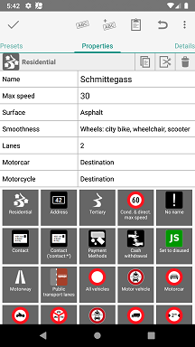

Vespucci Preset System
Preliminary documentation for Vespucci 0.9.8
As explained in the help documentation Vespucci uses JOSM compatible presets, currently any preset used in JOSM should simply work with Vespucci however that doesn't mean that there are no differences. Particularly with the new preset driven tagging interface presets have become even more important and if you are writing presets yourself and want them to work well in Vespucci please keep on reading.
Preset-Driven Tag-Editing in Vespucci

For the preset based editing to work Vespucci has to match the existing tags, including incomplete, key-only ones. with the available presets. This is done in an iterative fashion: the best matching preset is found (weighting presets with fixes key-value tuples higher than such with variable values), then all tags that can be found in linked presets are added (no separate header displayed) and this process is repeated until their are either no tags left or no preset match can be found.
Supported JOSM Preset Elements and Attributes
Note: this is loosely based on what JOSM claims to works, this may, and actually likely is, different from the actual implementation. Language specific attributes are ignored see Translation
| Element | Attributes | Support | Notes |
|---|---|---|---|
| <presets> | ignored | ||
| <!-- comment --> | ignored | ||
| <group> | supported | ||
| name | supported | required | |
| name_context | supported | ||
| icon | supported | you really should add one for Vespucci | |
| <item> | supported | ||
| name | supported | required | |
| name_context | supported | ||
| icon | supported | you really should add one for Vespucci | |
| type | supported | ||
| name_template | ignored | ||
| preset_name_label | ignored | ||
| <chunk> | supported | ||
| id | supported | required | |
| <reference> | supported | ||
| ref | supported | required | |
| <key> | supported | ||
| value | supported | required | |
| match | partial | only the "key" value is supported, all other values are ignored | |
| <text> | supported | ||
| key | supported | required | |
| text | supported | ||
| match | partial | only the "key" value is supported, all other values are ignored | |
| default | supported | ||
| use_last_as_default | ignored | ||
| auto_increment | ignored | ||
| length | ignored | ||
| alternative_autocomplete_keys | ignored | ||
| <combo> | supported | ||
| key | supported | required | |
| text | supported | ||
| text_context | ignored | ||
| values | supported | ||
| values_sort | supported | ||
| delimiter | supported | ||
| default | supported | ||
| match | partial | only the "key" value is supported, all other values are ignored | |
| display_values | supported | ||
| short_descriptions | partial | will only be used if display_values is not present | |
| values_context | ignored | ||
| editable | ignored | ||
| use_last_as_default | ignored | ||
| values_searchable | ignored | all values are currently added to the index | |
| length | ignored | ||
| values_no_i18n | ignored | ||
| <multiselect> | supported | ||
| key | supported | required | |
| text | supported | ||
| text_context | ignored | ||
| values | supported | ||
| values_sort | supported | ||
| delimiter | supported | ||
| default | supported | ||
| match | partial | only the "key" value is supported, all other values are ignored | |
| display_values | supported | ||
| short_descriptions | partial | will only be used if display_values is not present | |
| values_context | ignored | ||
| editable | ignored | ||
| use_last_as_default | ignored | ||
| values_searchable | ignored | all values are currently added to the index | |
| length | ignored | ||
| values_no_i18n | ignored | ||
| rows | ignored | ||
| <list_entry> | supported | ||
| display_value | supported | ||
| short_description | supported | ||
| icon | ignored | ||
| icon_size | ignored | ||
| <checkgroup> | ignored | but not the included |
|
| <check> | supported | ||
| key | supported | required | |
| text | supported | ||
| text_context | ignored | ||
| value_on | supported | ||
| value_off | supported | ||
| disable_off | supported | ||
| default | supported | ||
| match | partial | only the "key" value is supported, all other values are ignored | |
| <label> | ignored | ||
| <space/> | ignored | ||
| <optional> | supported | doesn't display anything | |
| text | ignored | ||
| <separator/> | supported | starts a new row in the preset selection display | |
| <item_separator/> | ignored | ||
| <link> | supported | ||
| href | partial | language variants are currently not supported | |
| <roles> | ignored | but not the included |
|
| <role> | supported | ||
| key | supported | required | |
| text | ignored | ||
| text_context | ignored | ||
| requisite | ignored | ||
| count | ignored | ||
| type | ignored | ||
| member_expression | ignored |
Translation
While the preset specification includes language specific text by prefixing the keys with the two letter ISO code, for example de.texte, in practical terms this doesn't really work. Particularly if lots of languages are in use, the preset file itself would explode in size, become essentially illegible and force the application to parse many 100's if not 1000's of attributes for languages it is not interested in.
For Vespucci I've chosen a different approach based on GNU gettext format files, the simple Preset2Pot utility will generate a .pot file from a preset which you can use with one of the translation services to produce GNU gettext compatible translations of all the strings in the preset (excluding the actual key and value strings).